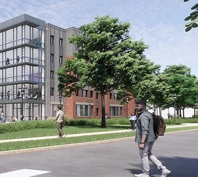

Womack Commons at MTSU
A 554-bed gateway community in Murfreesboro — Middle Tennessee State University's first student housing public-private partnership.

A first for MTSU
Following a competitive procurement, Middle Tennessee State University selected its first-ever student housing public-private partnership to expand and diversify on-campus living options. Madrone Community Development Foundation serves as the project's nonprofit owner through its subsidiary, Madrone-MTSU Student Housing LLC, which entered into a ground lease with the State of Tennessee.
Womack Commons will add 554 beds and establish a vibrant gateway to the MTSU campus — delivered without the university financing, backstopping, or guaranteeing the project in any way.
The structure
Financing closed in December 2025 with the sale of $56,535,000 in tax-exempt and taxable revenue bonds issued by the Health and Educational Facilities Board of Rutherford County. Bond proceeds were loaned to the Madrone entity, with debt service payable solely from project revenues. The Annex Group leads design and construction, with Raymond James serving as underwriter for the bond offering and delivery scheduled ahead of the Fall 2027 semester.
Highlights
- 554 new on-campus beds for MTSU students
- MTSU's first student housing public-private partnership
- $56.5 million in tax-exempt and taxable bonds issued by the Health and Educational Facilities Board of Rutherford County
- Ground lease between the State of Tennessee and Madrone-MTSU Student Housing LLC
- No university financing, backstop, or guarantee
- Scheduled for completion in summer 2027, ahead of the fall semester
Explore more of our work.
See how the same model is delivering housing at Florida Tech, the University of Memphis, and Morehouse & Spelman Colleges.
All Projects